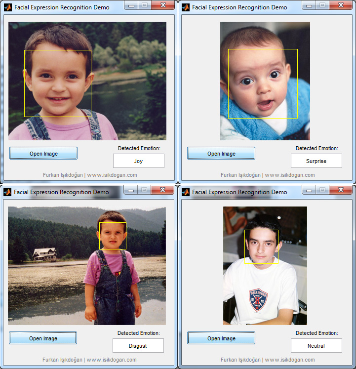

Fotoğraflarda yüz ifadesi tanıma
June 13, 2012 Bu yazıda kısaca fotoğraflardan otomatik yüz ifadesi tanıma projemden bahsedeceğim. Fotoğraflara bakarak insanların yüz ifadelerini tanımak için insan sarrafı olmaya gerek yok, herhangi bir yazılım olmadan da insanların yüz ifadesinin ne olduğunu söyleyebiliriz diyebilirsiniz. Peki bu işi yazılımsal olarak gerçeklemenin nasıl bir faydası olabilir? Örneğin grup fotoğraflarında ruh hali analizi ilginç bir örnek olabilir. Bir etkinlikte çekilen fotoğraflardaki kişilerin yüz ifadeleri algılanarak insanların genel olarak ne kadar eğlendiği ile ilgili sayısal veriler elde edilebilir. Bir başka örnek de içerik duyarlı görüntü erişimi olabilir, örneğin bir veritabanında insanların yalnızca şaşırmış göründükleri fotoğraflara erişmek isteyebiliriz.
Bu çalışmada yüz ifadeleri için "mutluluk", "üzüntü", "şaşkınlık", "iğrenme", "öfke", "korku" ve "nötr" olmak üzere 7 farklı duygu sınıfı tanımlandı. Uygulamanın çalışma mantığını kısaca aşağıdaki gibi özetleyebiliriz.
Yüz Algılama
Yüz ifadesinin tanınabilmesi için öncelikle fotoğraflardaki yüzlerin bulunması gerektiğinden yüz algılama çalışmanın ilk adımını oluşturuyor. Bu uygulamada popüler bir yöntem olan Viola-Jones yüz algılama algoritmasını kullandım ve fotoğrafta bulunan yüzleri içeren dikdörtgenleri kullanarak fotoğrafları yalnızca yüz görüntülerini içerecek şekilde kırptım.
Yerel Özellik Çıkarımı
Uygulamada ikinci adımı ise bulunan yüz görüntülerini nasıl sayısal olarak ifade edeceğimiz oluşturuyor. Burada ilk akla gelen örnekler ağız ile kulaklar arası mesafenin iki göz arası mesafeye oranı vs. olabilir ancak burada ben tekdüze ve her örnek için tekrarlanabilir bir yöntem olan Histogram of Oriented Gradients (HOG) tanımlayıcılarını kullanmayı tercih ettim. Fotoğraflardaki yüzlerin büyüklüğü farklı olabileceğinden algoritmayı ölçekten bağımsız olarak gerçekledim.
Boyut Azaltma
Bir önceki adımda bahsettiğim özellik vektörlerinin boyut sayısı anlamında oldukça büyük olması gereksiz bellek ve işlem gücü kullanımına yol açabilir. Burada temel bileşenler analizini (PCA) uyguladığımızda toplam varyansın %99'unun temel bileşenlerin yalnızca %18 ile açıklanabildiği görüyoruz (bkz. teknik rapor).
Sınıflama
Uygulamanın son adımını elde edilen özellik vektörlerinin bir sınıflayıcı kullanılarak sınıflanması oluşturuluyor. Ben burada fazla parametre içermediği ve sonuçları tekrarlanabilir olduğu için destek vektör makinelerini (SVM) kullanmayı tercih ettim ve sistem kullandığım veri seti üzerinde yaklaşık %80 doğru sınıflama başarısı elde etti.
Görüntü işleme, Bilgisayarla görü, Programlama